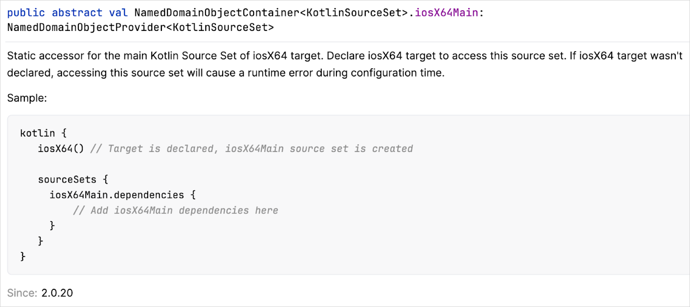

Kotlin 2.0.20 的新特性
The Kotlin 2.0.20 release is out! This version includes performance improvements and bug fixes for Kotlin 2.0.0, where we announced the Kotlin K2 compiler as Stable. Here are some additional highlights from this release:
- The data class copy function to have the same visibility as the constructor
- Static accessors for source sets from the default target hierarchy are now available in multiplatform projects
- Concurrent marking for Kotlin/Native has been made possible in the garbage collector
- The
@ExperimentalWasmDslannotation in Kotlin/Wasm has a new location - Support has been added for Gradle versions 8.6–8.8
- A new option allows sharing JVM artifacts between Gradle projects as class files
- The Compose compiler has been updated
- Support for UUIDs has been added to the common Kotlin standard library
IDE support
The Kotlin plugins that support 2.0.20 are bundled in the latest IntelliJ IDEA and Android Studio. You don't need to update the Kotlin plugin in your IDE. All you need to do is to change the Kotlin version to 2.0.20 in your build scripts.
See Update to a new release for details.
Language
Kotlin 2.0.20 begins to introduce changes to improve consistency in data classes and replace the Experimental context receivers feature.
Data class copy function to have the same visibility as constructor
Currently, if you create a data class using a private constructor, the automatically generated copy() function doesn't
have the same visibility. This can cause problems later in your code. In future Kotlin releases, we will introduce the
behavior that the default visibility of the copy() function is the same as the constructor. This change will be
introduced gradually to help you migrate your code as smoothly as possible.
Our migration plan starts with Kotlin 2.0.20, which issues warnings in your code where the visibility will change in the future. For example:
// Triggers a warning in 2.0.20
data class PositiveInteger private constructor(val number: Int) {
companion object {
fun create(number: Int): PositiveInteger? = if (number > 0) PositiveInteger(number) else null
}
}
fun main() {
val positiveNumber = PositiveInteger.create(42) ?: return
// Triggers a warning in 2.0.20
val negativeNumber = positiveNumber.copy(number = -1)
// Warning: Non-public primary constructor is exposed via the generated 'copy()' method of the 'data' class.
// The generated 'copy()' will change its visibility in future releases.
}
For the latest information about our migration plan, see the corresponding issue in YouTrack.
To give you more control over this behavior, in Kotlin 2.0.20 we've introduced two annotations:
@ConsistentCopyVisibilityto opt in to the behavior now before we make it the default in a later release.@ExposedCopyVisibilityto opt out of the behavior and suppress warnings at the declaration site. Note that even with this annotation, the compiler still reports warnings when thecopy()function is called.
If you want to opt in to the new behavior already in 2.0.20 for a whole module rather than in individual classes,
you can use the -Xconsistent-data-class-copy-visibility compiler option.
This option has the same effect as adding the @ConsistentCopyVisibility annotation to all data classes in a module.
Phased replacement of context receivers with context parameters
In Kotlin 1.6.20, we introduced context receivers as an Experimental feature. After listening to community feedback, we've decided not to continue with this approach and will take a different direction.
In future Kotlin releases, context receivers will be replaced by context parameters. Context parameters are still in the design phase, and you can find the proposal in the KEEP.
Since the implementation of context parameters requires significant changes to the compiler, we've decided not to support context receivers and context parameters simultaneously. This decision greatly simplifies the implementation and minimizes the risk of unstable behavior.
We understand that context receivers are already being used by a large number of developers. Therefore, we will begin
gradually removing support for context receivers. Our migration plan starts with Kotlin 2.0.20, where warnings are issued
in your code when context receivers are used with the -Xcontext-receivers compiler option. For example:
class MyContext
context(MyContext)
// Warning: Experimental context receivers are deprecated and will be superseded by context parameters.
// Please don't use context receivers. You can either pass parameters explicitly or use members with extensions.
fun someFunction() {
}
This warning will become an error in future Kotlin releases.
If you use context receivers in your code, we recommend that you migrate your code to use either of the following:
Explicit parameters.
Before After ```kotlin context(ContextReceiverType) fun someFunction() { contextReceiverMember() } ``` ```kotlin fun someFunction(explicitContext: ContextReceiverType) { explicitContext.contextReceiverMember() } ``` Extension member functions (if possible).
Before After ```kotlin context(ContextReceiverType) fun contextReceiverMember() = TODO() context(ContextReceiverType) fun someFunction() { contextReceiverMember() } ``` ```kotlin class ContextReceiverType { fun contextReceiverMember() = TODO() } fun ContextReceiverType.someFunction() { contextReceiverMember() } ```
Alternatively, you can wait until the Kotlin release where context parameters are supported in the compiler. Note that context parameters will initially be introduced as an Experimental feature.
Kotlin Multiplatform
Kotlin 2.0.20 brings improvements to source set management in multiplatform projects as well as deprecates compatibility with some Gradle Java plugins due to recent changes in Gradle.
Static accessors for source sets from the default target hierarchy
Since Kotlin 1.9.20, the default hierarchy template
is automatically applied to all Kotlin Multiplatform projects.
And for all of the source sets from the default hierarchy template, the Kotlin Gradle plugin provided type-safe accessors.
That way, you could finally access source sets for all the specified targets without having to use by getting or by creating constructs.
Kotlin 2.0.20 aims to improve your IDE experience even further. It now provides static accessors in
the sourceSets {} block for all the source sets from the default hierarchy template.
We believe this change will make accessing source sets by name easier and more predictable.
Each such source set now has a detailed KDoc comment with a sample and a diagnostic message with a warning in case you try to access the source set without declaring the corresponding target first:
kotlin {
jvm()
linuxX64()
linuxArm64()
mingwX64()
sourceSets {
commonMain.languageSettings {
progressiveMode = true
}
jvmMain { }
linuxX64Main { }
linuxArm64Main { }
// Warning: accessing source set without registering the target
iosX64Main { }
}
}

Learn more about the hierarchical project structure in Kotlin Multiplatform.
Deprecated compatibility with Kotlin Multiplatform Gradle plugin and Gradle Java plugins
In Kotlin 2.0.20, we introduce a deprecation warning when you apply the Kotlin Multiplatform Gradle plugin and any of the following Gradle Java plugins to the same project: Java, Java Library, and Application. The warning also appears when another Gradle plugin in your multiplatform project applies a Gradle Java plugin. For example, the Spring Boot Gradle Plugin automatically applies the Application plugin.
We've added this deprecation warning due to fundamental compatibility issues between Kotlin Multiplatform's project model and Gradle's Java ecosystem plugins. Gradle's Java ecosystem plugins currently don't take into account that other plugins may:
- Also publish or compile for the JVM target in a different way than the Java ecosystem plugins.
- Have two different JVM targets in the same project, such as JVM and Android.
- Have a complex multiplatform project structure with potentially multiple non-JVM targets.
Unfortunately, Gradle doesn't currently provide any API to address these issues.
We previously used some workarounds in Kotlin Multiplatform to help with the integration of Java ecosystem plugins. However, these workarounds never truly solved the compatibility issues, and since the release of Gradle 8.8, these workarounds are no longer possible. For more information, see our YouTrack issue.
While we don't yet know exactly how to resolve this compatibility problem, we are committed to continuing support for
some form of Java source compilation in your Kotlin Multiplatform projects. At a minimum, we will support the compilation
of Java sources and using Gradle's java-base
plugin within your multiplatform projects.
In the meantime, if you see this deprecation warning in your multiplatform project, we recommend that you:
- Determine whether you actually need the Gradle Java plugin in your project. If not, consider removing it.
- Check if the Gradle Java plugin is only used for a single task. If so, you might be able to remove the plugin without much effort. For example, if the task uses a Gradle Java plugin to create a Javadoc JAR file, you can define the Javadoc task manually instead.
Otherwise, if you want to use both the Kotlin Multiplatform Gradle plugin and these Gradle plugins for Java in your multiplatform project, we recommend that you:
- Create a separate subproject in your multiplatform project.
- In the separate subproject, apply the Gradle plugin for Java.
- In the separate subproject, add a dependency on your parent multiplatform project.
The separate subproject must not be a multiplatform project, and you must only use it to set up a dependency on your multiplatform project.
For example, you have a multiplatform project called my-main-project and you want
to use the Application Gradle plugin to run a JVM application.
Once you've created a subproject, let's call it subproject-A, your parent project structure should look like this:
.
├── build.gradle.kts
├── settings.gradle
├── subproject-A
└── build.gradle.kts
└── src
└── Main.java
In your subproject's build.gradle.kts file, apply the Application plugin in the plugins {} block:
【Kotlin】
plugins {
id("application")
}
【Groovy】
plugins {
id('application')
}
In your subproject's build.gradle.kts file, add a dependency on your parent multiplatform project:
【Kotlin】
dependencies {
implementation(project(":my-main-project")) // The name of your parent multiplatform project
}
【Groovy】
dependencies {
implementation project(':my-main-project') // The name of your parent multiplatform project
}
Your parent project is now set up to work with both plugins.
Kotlin/Native
Kotlin/Native receives improvements in the garbage collector and for calling Kotlin suspending functions from Swift/Objective-C.
Concurrent marking in garbage collector
In Kotlin 2.0.20, the JetBrains team takes another step toward improving Kotlin/Native runtime performance. We've added experimental support for concurrent marking in the garbage collector (GC).
By default, application threads must be paused when GC is marking objects in the heap. This greatly affects the duration of the GC pause time, which is important for the performance of latency-critical applications, such as UI applications built with Compose Multiplatform.
Now, the marking phase of the garbage collection can be run simultaneously with application threads. This should significantly shorten the GC pause time and help improve app responsiveness.
How to enable
The feature is currently Experimental.
To enable it, set the following option in your gradle.properties file:
kotlin.native.binary.gc=cms
Please report any problems to our issue tracker YouTrack.
Support for bitcode embedding removed
Starting with Kotlin 2.0.20, the Kotlin/Native compiler no longer supports bitcode embedding. Bitcode embedding was deprecated in Xcode 14 and removed in Xcode 15 for all Apple targets.
Now, the embedBitcode parameter for the framework configuration,
as well as the -Xembed-bitcode and -Xembed-bitcode-marker command line arguments are deprecated.
If you still use earlier versions of Xcode but want to upgrade to Kotlin 2.0.20, disable bitcode embedding in your Xcode projects.
Changes to GC performance monitoring with signposts
Kotlin 2.0.0 made it possible to monitor the performance of the Kotlin/Native garbage collector (GC) through Xcode Instruments. Instruments include the signposts tool, which can show GC pauses as events. This comes in handy when checking GC-related freezes in your iOS apps.
The feature was enabled by default, but unfortunately, it sometimes led to crashes when the application was run simultaneously with Xcode Instruments. Starting with Kotlin 2.0.20, it requires an explicit opt-in with the following compiler option:
-Xbinary=enableSafepointSignposts=true
Learn more about GC performance analysis in the documentation.
Ability to call Kotlin suspending functions from Swift/Objective-C on non-main threads
Previously, Kotlin/Native had a default restriction, limiting the ability to call Kotlin suspending functions from Swift
and Objective-C to only the main thread. Kotlin 2.0.20 lifts that limitation, allowing you to run Kotlin
suspend functions from Swift/Objective-C on any thread.
If you've previously switched the default behavior for non-main threads with the kotlin.native.binary.objcExportSuspendFunctionLaunchThreadRestriction=none
binary option, you can now remove it from your gradle.properties file.
Kotlin/Wasm
In Kotlin 2.0.20, Kotlin/Wasm continues the migration towards named exports and relocates the @ExperimentalWasmDsl annotation.
Error in default export usage
As part of the migration towards named exports, a warning message was previously printed to the console when using a default import for Kotlin/Wasm exports in JavaScript.
To fully support named exports, this warning has now been upgraded to an error. If you use a default import, you encounter the following error message:
Do not use default import. Use the corresponding named import instead.
This change is part of a deprecation cycle to migrate towards named exports. Here's what you can expect during each phase:
- In version 2.0.0: A warning message is printed to the console, explaining that exporting entities via default exports is deprecated.
- In version 2.0.20: An error occurs, requesting the use of the corresponding named import.
- In version 2.1.0: The use of default imports is completely removed.
New location of ExperimentalWasmDsl annotation
Previously, the @ExperimentalWasmDsl annotation for WebAssembly (Wasm) features was placed in this location within the
Kotlin Gradle plugin:
org.jetbrains.kotlin.gradle.targets.js.dsl.ExperimentalWasmDsl
In 2.0.20, the @ExperimentalWasmDsl annotation has been relocated to:
org.jetbrains.kotlin.gradle.ExperimentalWasmDsl
The previous location is now deprecated and might lead to build failures with unresolved references.
To reflect the new location of the @ExperimentalWasmDsl annotation, update the import statement in your Gradle build scripts.
Use an explicit import for the new @ExperimentalWasmDsl location:
import org.jetbrains.kotlin.gradle.ExperimentalWasmDsl
Alternatively, remove this star import statement from the old package:
import org.jetbrains.kotlin.gradle.targets.js.dsl.*
Kotlin/JS
Kotlin/JS introduces some Experimental features to support static members in JavaScript and to create Kotlin collections from JavaScript.
Support for using Kotlin static members in JavaScript
This feature is Experimental. It may be dropped or changed at any time. Use it only for evaluation purposes. We would appreciate your feedback on it in YouTrack.
Starting with Kotlin 2.0.20, you can use the @JsStatic annotation. It works similarly to @JvmStatic
and instructs the compiler to generate additional static methods for the target declaration. This helps you use static
members from your Kotlin code directly in JavaScript.
You can use the @JsStatic annotation for functions defined in named objects, as well as in companion objects declared
inside classes and interfaces. The compiler generates both a static method of the object and an instance method in the
object itself. For example:
class C {
companion object {
@JsStatic
fun callStatic() {}
fun callNonStatic() {}
}
}
Now, callStatic() is static in JavaScript while callNonStatic() is not:
C.callStatic(); // Works, accessing the static function
C.callNonStatic(); // Error, not a static function in the generated JavaScript
C.Companion.callStatic(); // Instance method remains
C.Companion.callNonStatic(); // The only way it works
It's also possible to apply the @JsStatic annotation to a property of an object or a companion object, making its getter
and setter methods static members in that object or the class containing the companion object.
Ability to create Kotlin collections from JavaScript
This feature is Experimental. It may be dropped or changed at any time. Use it only for evaluation purposes. We would appreciate your feedback on it in YouTrack.
Kotlin 2.0.0 introduced the ability to export Kotlin collections to JavaScript (and TypeScript). Now, the JetBrains team is taking another step to improve collection interoperability. Starting with Kotlin 2.0.20, it's possible to create Kotlin collections directly from the JavaScript/TypeScript side.
You can create Kotlin collections from JavaScript and pass them as arguments to the exported constructors or functions. As soon as you mention a collection inside an exported declaration, Kotlin generates a factory for the collection that is available in JavaScript/TypeScript.
Take a look at the following exported function:
// Kotlin
@JsExport
fun consumeMutableMap(map: MutableMap<String, Int>)
Since the MutableMap collection is mentioned, Kotlin generates an object with a factory method available from JavaScript/TypeScript.
This factory method then creates a MutableMap from a JavaScript Map:
// JavaScript
import { consumeMutableMap } from "an-awesome-kotlin-module"
import { KtMutableMap } from "an-awesome-kotlin-module/kotlin-kotlin-stdlib"
consumeMutableMap(
KtMutableMap.fromJsMap(new Map([["First", 1], ["Second", 2]]))
)
This feature is available for the Set, Map, and List Kotlin collection types and their mutable counterparts.
Gradle
Kotlin 2.0.20 is fully compatible with Gradle 6.8.3 through 8.6. Gradle 8.7 and 8.8 are also supported, with only one
exception: If you use the Kotlin Multiplatform Gradle plugin, you may see deprecation warnings in your multiplatform projects
calling the withJava() function in the JVM target. We plan to fix this issue as soon as possible.
For more information, see the issue in YouTrack.
You can also use Gradle versions up to the latest Gradle release, but if you do, keep in mind that you might encounter deprecation warnings or some new Gradle features might not work.
This version brings changes such as beginning the deprecation process for the old incremental compilation approach based on JVM history files, as well as a new way of sharing JVM artifacts between projects.
Deprecated incremental compilation based on JVM history files
In Kotlin 2.0.20, the incremental compilation approach based on JVM history files is deprecated in favor of the new incremental compilation approach that has been enabled by default since Kotlin 1.8.20.
The incremental compilation approach based on JVM history files suffered from limitations, such as not working with Gradle's build cache and not supporting compilation avoidance. In contrast, the new incremental compilation approach overcomes these limitations and has performed well since its introduction.
Given that the new incremental compilation approach has been used by default for the last two major Kotlin releases,
the kotlin.incremental.useClasspathSnapshot Gradle property is deprecated in Kotlin 2.0.20.
Therefore, if you use it to opt out, you will see a deprecation warning.
Option to share JVM artifacts between projects as class files
This feature is Experimental. It may be dropped or changed at any time. Use it only for evaluation purposes. We would appreciate your feedback on it in YouTrack. Opt-in is required (see details below).
In Kotlin 2.0.20, we introduce a new approach that changes the way the outputs of Kotlin/JVM compilations,
such as JAR files, are shared between projects. With this approach, Gradle's apiElements configuration now has a secondary
variant that provides access to the directory containing compiled .class files. When configured, your project uses this
directory instead of requesting the compressed JAR artifact during compilation. This reduces the number of times JAR files
are compressed and decompressed, especially for incremental builds.
Our testing shows that this new approach can provide build performance improvements for Linux and macOS hosts. However, on Windows hosts, we have seen a degradation in performance due to how Windows handles I/O operations when working with files.
To try this new approach, add the following property to your gradle.properties file:
kotlin.jvm.addClassesVariant=true
By default, this property is set to false and the apiElements variant in Gradle requests the compressed JAR artifact.
Gradle has a related property that you can use in your Java-only projects to only expose the compressed JAR artifact during compilation instead of the directories containing compiled
.classfiles:org.gradle.java.compile-classpath-packaging=trueFor more information on this property and its purpose, see Gradle's documentation on the Significant build performance drop on Windows for huge multi-projects.
We would appreciate your feedback on this new approach. Have you noticed any performance improvements while using it? Let us know by adding a comment in YouTrack.
Aligned dependency behavior of Kotlin Gradle plugin with java-test-fixtures plugin
Prior to Kotlin 2.0.20, if you used the java-test-fixtures plugin
in your project, there was a difference between Gradle and the Kotlin Gradle plugin in how dependencies were propagated.
The Kotlin Gradle plugin propagated dependencies:
- From the
java-test-fixturesplugin'simplementationandapidependency types to thetestsource set compilation classpath. - From the main source set's
implementationandapidependency types to thejava-test-fixturesplugin's source set compilation classpath.
However, Gradle only propagated dependencies in the api dependency types.
This difference in behavior led to some projects finding resource files multiple times in the classpath.
As of Kotlin 2.0.20, the Kotlin Gradle plugin's behavior is aligned with Gradle's java-test-fixtures plugin so this
problem no longer occurs for this or other Gradle plugins.
As a result of this change, some dependencies in the test and testFixtures source sets may no longer be accessible.
If this happens, either change the dependency declaration type from implementation to api or add a new dependency
declaration on the affected source set.
Added task dependency for rare cases when the compile task lacks one on an artifact
Prior to 2.0.20, we found that there were scenarios where a compile task was missing a task dependency for one of its artifact inputs. This meant that the result of the dependent compile task was unstable, as sometimes the artifact had been generated in time, but sometimes, it hadn't.
To fix this issue, the Kotlin Gradle plugin now automatically adds the required task dependency in these scenarios.
In very rare cases, we've found that this new behavior can cause a circular dependency error. For example, if you have multiple compilations where one compilation can see all internal declarations of the other, and the generated artifact relies on the output of both compilation tasks, you could see an error like:
FAILURE: Build failed with an exception.
What went wrong:
Circular dependency between the following tasks:
:lib:compileKotlinJvm
--- :lib:jvmJar
\--- :lib:compileKotlinJvm (*)
(*) - details omitted (listed previously)
To fix this circular dependency error, we've added a Gradle property: archivesTaskOutputAsFriendModule.
By default, this property is set to true to track the task dependency. To disable the use of the artifact in the compilation
task, so that no task dependency is required, add the following in your gradle.properties file:
kotlin.build.archivesTaskOutputAsFriendModule=false
For more information, see the issue in YouTrack.
Compose compiler
In Kotlin 2.0.20, the Compose compiler gets a few improvements.
Fix for the unnecessary recompositions issue introduced in 2.0.0
Compose compiler 2.0.0 has an issue where it sometimes incorrectly infers the stability of types in multiplatform projects with non-JVM targets. This can lead to unnecessary (or even endless) recompositions. We strongly recommended updating your Compose apps made for Kotlin 2.0.0 to version 2.0.10 or newer.
If your app is built with Compose compiler 2.0.10 or newer but uses dependencies built with version 2.0.0, these older dependencies may still cause recomposition issues. To prevent this, update your dependencies to versions built with the same Compose compiler as your app.
New way to configure compiler options
We've introduced a new option configuration mechanism to avoid the churn of top-level parameters.
It's harder for the Compose compiler team to test things out by creating or removing top-level entries for the composeCompiler {} block.
So, options such as strong skipping mode and non-skipping group optimizations are now enabled through the featureFlags property.
This property will be used to test new Compose compiler options that will eventually become default.
This change has also been applied to the Compose compiler Gradle plugin. To configure feature flags going forward, use the following syntax (this code will flip all of the default values):
composeCompiler {
featureFlags = setOf(
ComposeFeatureFlag.IntrinsicRemember.disabled(),
ComposeFeatureFlag.OptimizeNonSkippingGroups,
ComposeFeatureFlag.StrongSkipping.disabled()
)
}
Or, if you are configuring the Compose compiler directly, use the following syntax:
-P plugin:androidx.compose.compiler.plugins.kotlin:featureFlag=IntrinsicRemember
The enableIntrinsicRemember, enableNonSkippingGroupOptimization, and enableStrongSkippingMode properties have been therefore deprecated.
We would appreciate any feedback you have on this new approach in YouTrack.
Strong skipping mode enabled by default
Strong skipping mode for the Compose compiler is now enabled by default.
Strong skipping mode is a Compose compiler configuration option that changes the rules for what composables can be skipped.
With strong skipping mode enabled, composables with unstable parameters can now also be skipped.
Strong skipping mode also automatically remembers lambdas used in composable functions,
so you should no longer need to wrap your lambdas with remember to avoid recomposition.
For more details, see the strong skipping mode documentation.
Composition trace markers enabled by default
The includeTraceMarkers option is now set to true by default in the Compose compiler Gradle plugin to match the default value
in the compiler plugin. This allows you to see composable functions in the Android Studio system trace profiler. For details
about composition tracing, see this Android Developers blog post.
Non-skipping group optimizations
This release includes a new compiler option: when enabled, non-skippable and non-restartable composable functions will no
longer generate a group around the body of the composable. This leads to fewer allocations and thus to improved performance.
This option is experimental and disabled by default but can be enabled with the feature flag OptimizeNonSkippingGroups
as shown above.
This feature flag is now ready for wider testing. Any issues found when enabling the feature can be filed on the Google issue tracker.
Support for default parameters in abstract composable functions
You can now add default parameters to abstract composable functions.
Previously, the Compose compiler would report an error when attempting to do this even though it is valid Kotlin code.
We've now added support for this in the Compose compiler, and the restriction has been removed.
This is especially useful for including default Modifier values:
abstract class Composables {
@Composable
abstract fun Composable(modifier: Modifier = Modifier)
}
Default parameters for open composable functions are still restricted in 2.0.20. This restriction will be addressed in future releases.
Standard library
The standard library now supports universally unique identifiers as an Experimental feature and includes some changes to Base64 decoding.
Support for UUIDs in the common Kotlin standard library
This feature is Experimental. To opt in, use the
@ExperimentalUuidApiannotation or the compiler option-opt-in=kotlin.uuid.ExperimentalUuidApi.
Kotlin 2.0.20 introduces a class for representing UUIDs (universally unique identifiers) in the common Kotlin standard library to address the challenge of uniquely identifying items.
Additionally, this feature provides APIs for the following UUID-related operations:
- Generating UUIDs.
- Parsing UUIDs from and formatting them to their string representations.
- Creating UUIDs from specified 128-bit values.
- Accessing the 128 bits of a UUID.
The following code example demonstrates these operations:
// Constructs a byte array for UUID creation
val byteArray = byteArrayOf(
0x55, 0x0E, 0x84.toByte(), 0x00, 0xE2.toByte(), 0x9B.toByte(), 0x41, 0xD4.toByte(),
0xA7.toByte(), 0x16, 0x44, 0x66, 0x55, 0x44, 0x00, 0x00
)
val uuid1 = Uuid.fromByteArray(byteArray)
val uuid2 = Uuid.fromULongs(0x550E8400E29B41D4uL, 0xA716446655440000uL)
val uuid3 = Uuid.parse("550e8400-e29b-41d4-a716-446655440000")
println(uuid1)
// 550e8400-e29b-41d4-a716-446655440000
println(uuid1 == uuid2)
// true
println(uuid2 == uuid3)
// true
// Accesses UUID bits
val version = uuid1.toLongs { mostSignificantBits, _ ->
((mostSignificantBits shr 12) and 0xF).toInt()
}
println(version)
// 4
// Generates a random UUID
val randomUuid = Uuid.random()
println(uuid1 == randomUuid)
// false
To maintain compatibility with APIs that use java.util.UUID, there are two extension functions in Kotlin/JVM for converting
between java.util.UUID and kotlin.uuid.Uuid: .toJavaUuid() and .toKotlinUuid(). For example:
val kotlinUuid = Uuid.parseHex("550e8400e29b41d4a716446655440000")
// Converts Kotlin UUID to java.util.UUID
val javaUuid = kotlinUuid.toJavaUuid()
val javaUuid = java.util.UUID.fromString("550e8400-e29b-41d4-a716-446655440000")
// Converts Java UUID to kotlin.uuid.Uuid
val kotlinUuid = javaUuid.toKotlinUuid()
This feature and the provided APIs simplify multiplatform software development by allowing code sharing among multiple platforms. UUIDs are also ideal in environments where generating unique identifiers is difficult.
Some example use cases involving UUIDs include:
- Assigning unique IDs to database records.
- Generating web session identifiers.
- Any scenario requiring unique identification or tracking.
Support for minLength in HexFormat
The
HexFormatclass and its properties are Experimental. To opt in, use the@OptIn(ExperimentalStdlibApi::class)annotation or the compiler option-opt-in=kotlin.ExperimentalStdlibApi.
Kotlin 2.0.20 adds a new minLength property to the NumberHexFormat class,
accessed through HexFormat.number.
This property lets you specify the minimum number of digits in hexadecimal representations of numeric values, enabling padding with
zeros to meet the required length. Additionally, leading zeros can be trimmed using the removeLeadingZeros property:
fun main() {
println(93.toHexString(HexFormat {
number.minLength = 4
number.removeLeadingZeros = true
}))
// "005d"
}
The minLength property does not affect parsing. However, parsing now allows hex strings to have more digits than the type's
width if the extra leading digits are zeros.
Changes to the Base64's decoder behavior
The
Base64class and its related features are Experimental. To opt in, use the@OptIn(ExperimentalEncodingApi::class)annotation or the compiler option-opt-in=kotlin.io.encoding.ExperimentalEncodingApi.
Two changes were introduced to the Base64 decoder's behavior in Kotlin 2.0.20:
- The Base64 decoder now requires padding
- A
withPaddingfunction has been added for padding configuration
The Base64 decoder now requires padding
The Base64 encoder now adds padding by default, and the decoder requires padding and prohibits non-zero pad bits when decoding.
withPadding function for padding configuration
A new .withPadding() function has been introduced to give users control over the padding behavior of Base64 encoding and decoding:
val base64 = Base64.UrlSafe.withPadding(Base64.PaddingOption.ABSENT_OPTIONAL)
This function enables the creation of Base64 instances with different padding options:
PaddingOption |
On encode | On decode |
|---|---|---|
PRESENT |
Add padding | Padding is required |
ABSENT |
Omit padding | No padding allowed |
PRESENT_OPTIONAL |
Add padding | Padding is optional |
ABSENT_OPTIONAL |
Omit padding | Padding is optional |
You can create Base64 instances with different padding options and use them to encode and decode data:
import kotlin.io.encoding.Base64
import kotlin.io.encoding.ExperimentalEncodingApi
@OptIn(ExperimentalEncodingApi::class)
fun main() {
// Example data to encode
val data = "fooba".toByteArray()
// Creates a Base64 instance with URL-safe alphabet and PRESENT padding
val base64Present = Base64.UrlSafe.withPadding(Base64.PaddingOption.PRESENT)
val encodedDataPresent = base64Present.encode(data)
println("Encoded data with PRESENT padding: $encodedDataPresent")
// Encoded data with PRESENT padding: Zm9vYmE=
// Creates a Base64 instance with URL-safe alphabet and ABSENT padding
val base64Absent = Base64.UrlSafe.withPadding(Base64.PaddingOption.ABSENT)
val encodedDataAbsent = base64Absent.encode(data)
println("Encoded data with ABSENT padding: $encodedDataAbsent")
// Encoded data with ABSENT padding: Zm9vYmE
// Decodes the data back
val decodedDataPresent = base64Present.decode(encodedDataPresent)
println("Decoded data with PRESENT padding: ${String(decodedDataPresent)}")
// Decoded data with PRESENT padding: fooba
val decodedDataAbsent = base64Absent.decode(encodedDataAbsent)
println("Decoded data with ABSENT padding: ${String(decodedDataAbsent)}")
// Decoded data with ABSENT padding: fooba
}
Documentation updates
The Kotlin documentation has received some notable changes:
- Improved Standard input page - Learn how to use Java Scanner and
readln(). - Improved K2 compiler migration guide - Learn about performance improvements, compatibility with Kotlin libraries and what to do with your custom compiler plugins.
- Improved Exceptions page - Learn about exceptions, how to throw and catch them.
- Improved Test code using JUnit in JVM - tutorial - Learn how to create tests using JUnit.
- Improved Interoperability with Swift/Objective-C page - Learn how to use Kotlin declarations in Swift/Objective-C code and Objective-C declarations in Kotlin code.
- Improved Swift package export setup page - Learn how to set up Kotlin/Native output that can be consumed by a Swift package manager dependency.
Install Kotlin 2.0.20
Starting from IntelliJ IDEA 2023.3 and Android Studio Iguana (2023.2.1) Canary 15, the Kotlin plugin is distributed as a bundled plugin included in your IDE. This means that you can't install the plugin from JetBrains Marketplace anymore.
To update to the new Kotlin version, change the Kotlin version to 2.0.20 in your build scripts.